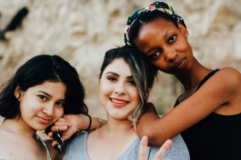

El CINER, a lo largo de los años trabajó en temas de: facilitación, planificación, monitoreo y evaluación; sin embargo desde el 2011 asumió de manera directa y explícita el trabajo con enfoque de género; pero más allá de eso, se percataba del flagelo que es la violencia contra las mujeres. Al realizar las evaluaciones, por ejemplo las que implicaban ingresar a las viviendas y monitorear los cambios al haber incorporado cocinas mejoradas; o haber llevado energía para iluminación en lugares remotos; y más aún viendo que no solo en áreas rurales, sino también en urbano marginales y urbanas; se precisaba ser «Agentes de Cambio»; es que el CINER asume la tarea de capacitarse, concientizar a su personal; sensibilizar a sus consultor*s.

Todo ello, sumado a nuestra naturaleza de servicio a la sociedad civil, y en cumplimiento a la Ley Boliviana No. 0348, Ley integral para garantizar a las mujeres una vida libre de violencia del 9 de marzo de 2013 (véase Art.3: Prioridad nacional); nuestros y nuestras especialistas en las diferentes áreas temáticas: energéticas, ambientales, de residuos sólidos, apoyo a Medianas y Pequeñas Empresas, Riego, educación y formación, entre otras; no descuidan el enfoque de género y de liderazgo; especialmente en un tema tan crítico tanto en Bolivia como en países de la región, por todo ello es que un tema de prioridad es el combate a la violencia hacia las mujeres.
Por todo ello, CINER forma parte de la Red de Género de la Organización Latinoamericana de Energía – OLADE forma entrenadoras o entrenadores – TOT (training of trainers) en «Tolerancia cero frente a la violencia hacia las mujeres» con licencia para Formación de formadores/as del Programa Regional ComVoMujer – GIZ, contando a la fecha con una amplia Red de formadores y formadoras en la metodología «Empresa Segura» en Ecuador, Perú, Paraguay y Bolivia. Asimismo, brinda asesoramiento a distintas instituciones y entidades de cooperación en temas de género y energía; equidad, educación y desarrollo.


CINER ha sido coordinador para Sudamérica de la Alianza Global de Energía Comunitaria – GVEP, como parte de las Metas de desarrollo del milenio. Luego formó parte activa en las discusiones en Mérida el 2013 para la elaboración de la «Agenda de Desarrollo Post – 2015 y la energía que queremos para todos»; siendo su Directora la relatora de los resultados de la Sociedad Civil, impulsando y formando parte activa de los Objetivos de Desarrollo sostenible – ODS. Es por ello que también en el VI Encuentro Latinoamericano Octubre 2017, organizado por la Asociación Latinoamericana de Facilitadores/as – ALFA; CINER fue invitado para brindar el Taller denominado: «El valor de la facilitación, conectando lo no conectable: Empresa y Violencia contra la mujer«, consolidando su liderazgo en la planificación y ejecución de políticas, planes, programas y proyectos con el debido cuidado de trabajo con y desde temas transversales como el de Prevención del Combate a la violencia a la mujer
En ese sentido, coadyuva también en la temática para empresas y colegios seguros; pues es vital contar con agentes de cambio y facilitadores/as de procesos en todo ámbito que incluya planificación, seguimiento, evaluación. Como parte de sus acciones de responsabilidad institucional, CINER asume a su cargo y con apoyo de la cooperación alemana para el desarrollo – GIZ ser agente activo de la erradicación de la violencia hacia las mujeres tanto en el sector empresarial como educativo.
Invitamos a Uds. a difundir que CINER, a través de CINER-ELLA, trabaja con talleres especializados para sensibilizar a personal del sector empresarial en tolerancia cero contra la violencia hacia las mujeres con metodologías probadas que permiten lograr impactos como:
⇨ El contar con indicadores de estimación de costos invisibles para la empresa es una oportunidad estratégica para mejorar la productividad laboral.
⇨ Sentar las bases para crear un ambiente laboral libre de violencia contra las mujeres, aumentando el compromiso laboral de trabajadores y trabajadoras.
⇨ Impacto mediático al comprometerse con la mejora de las condiciones de vida de su personal, en un tema tan sensible como la violencia.
⇨ La certificación
“colegio seguro” ofrece servicios de capacitación en
línea a establecimientos educativos y docentes que
estén interesad*s en su formación y sensibilización
sobre la violencia contra las mujeres con un enfoque
preventivo en el ámbito educativo, particularmente
para fomentar la tolerancia cero hacia este tipo de
violencia.
Esta certificación ha sido desarrollada por la
Cooperación Alemana, implementada por la GIZ a
través del programa regional ComVoMujer y ofrecida
en asocio con ACDemocracia y CINER.
Los colegios o docentes interesad*s que deseen
recibir más información pueden escribir a nuestro
correo: ciner@ciner.org